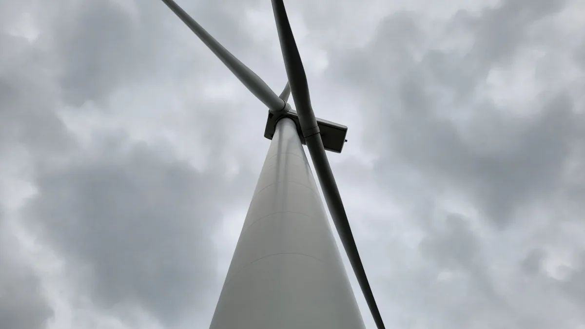
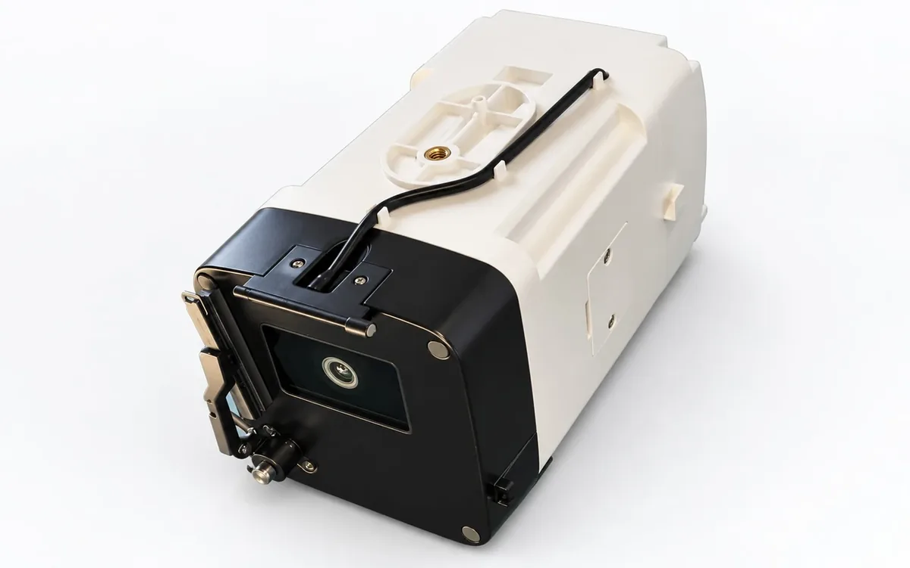
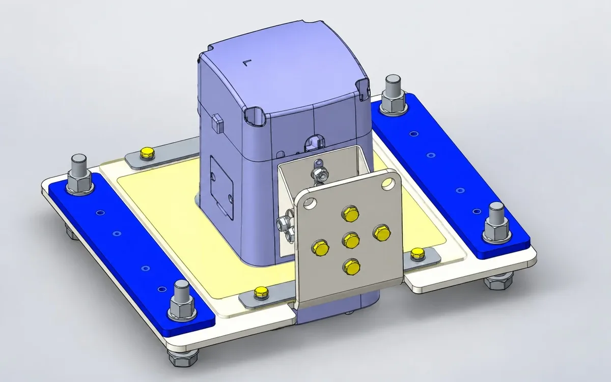

Wind Turbine Inspection Glossary: Key Terms in Plain English
Inspection reports and product sheets in wind energy use a dense vocabulary. This glossary explains common terms in plain language, grouped by topic, so asset managers, buyers and new technicians can read specifications with confidence.
Blade and rotor terms
- Leading edge
- The front edge of the blade that meets the wind first. It suffers erosion from rain, dust and hail.
- Trailing edge
- The thin rear edge where the two shell halves are bonded.
- Shear web
- An internal beam connecting the upper and lower shells, carrying shear loads.
- Spar cap
- The thick laminate strip in each shell that carries most bending load.
- Bond line
- The adhesive joint between shells or between shells and webs. A frequent site of internal defects.
- Blade root
- The circular end bolted to the hub, and the entry point for internal inspection.
- Pitch angle
- The blade's rotation about its own axis. Offsets between blades cause aerodynamic imbalance.
- Rotor imbalance
- Differences in mass or aerodynamics between blades, producing once-per-revolution vibration.
Clearance and tower terms

- Tip clearance
- The gap between blade tip and tower as the blade passes. Too little risks a tower strike.
- Tower passage
- The moment a blade passes in front of the tower, when clearance is measured.
- FMCW radar
- Frequency-modulated continuous-wave radar; measures distance through frequency difference and works in darkness.
- Update rate
- How often a sensor reports a value, in hertz (Hz).

Both video and radar-plus-camera approaches exist. For instance, the WIT-RC30 radar and camera clearance system lists an 80 GHz FMCW radar, at least 130 m range, 50 cm specified accuracy and an update rate of at least 25 Hz, with Modbus and CANopen interfaces.

Wind measurement terms
- Nacelle lidar
- A laser sensor on the nacelle measuring wind ahead of the rotor using the Doppler effect.
- Range gate / layer
- A distance ahead of the rotor at which lidar reports wind.
- Yaw misalignment
- An angle between the rotor axis and the wind direction, which reduces power and adds load.
- 1P, 3P
- Rotor rotation frequency and blade-passing frequency in a three-bladed rotor.
Bolting and NDT terms
- Preload
- The axial force in a bolt after tightening, clamping the joint.
- Proof load
- The load a bolt can carry without permanent stretch, defined for property classes in ISO 898-1.
- Hydraulic tensioning
- Stretching a bolt with a hydraulic cylinder before running down the nut.
- Ultrasonic time of flight
- The echo time of a sound pulse along the bolt, which grows with stretch and so indicates axial force.
- NDT
- Non-destructive testing: inspecting without damaging the part.
- PAUT
- Phased array ultrasonic testing, which steers ultrasonic beams electronically to image laminates and bonds.
Specification and reporting terms
| Term | Meaning | Why it matters |
|---|---|---|
| F.S. (full scale) | Accuracy as a share of maximum range | Relative error is larger at low readings |
| Specified accuracy | Accuracy under stated test conditions | Field conditions may differ |
| IP rating | Ingress protection against dust and water, e.g. IP65 | Suitability for outdoor mounting |
| Severity category | Ranking of a finding's urgency in a report | Drives repair priority |
| Coverage | Share of a surface actually inspected | Uninspected areas are unknowns |
Reading specifications carefully
Always look for the conditions behind a number: test distance, weather, calibration and installation. A specification without conditions is hard to compare. That is why WindInspectTech presents each value together with its source conditions.
Inspection report vocabulary
- Finding
- An observed condition recorded in a report, which may or may not be a defect after review.
- Indication
- A signal from an NDT method that needs interpretation before it is classed as a defect.
- Baseline
- A reference measurement or inspection used to judge later changes.
- Human verification
- Review of automatically flagged findings by a qualified engineer before reporting.
- Lock-out
- The procedure that secures a turbine against starting while people work on it.
Knowing these terms makes it easier to compare reports from different providers and to ask the right follow-up questions, such as how a finding was verified, which conditions applied during measurement, and whether the same reference positions were used as in previous inspections.
If a supplier uses a term that is not defined in its documentation, ask for the definition in writing. Clear vocabulary avoids misunderstandings in contracts, acceptance tests and warranty discussions.
Frequently asked questions
What is blade tip clearance?
The minimum distance between a blade tip and the tower as the blade passes. Design standards such as IEC 61400-1 set requirements for keeping enough clearance.
What does 1P mean?
The rotor rotational frequency. 3P is three times that, the blade-passing frequency for a three-bladed rotor.
What is the difference between UT and PAUT?
Conventional ultrasonic testing uses a single-element probe. Phased array ultrasonic testing steers and focuses the beam electronically using many elements, producing cross-sectional images.
What is F.S. in an accuracy specification?
Full scale. An accuracy of 3% F.S. means the error limit is 3% of the instrument maximum range, not of the reading.
What is FMCW radar?
Frequency-modulated continuous-wave radar, which sweeps its frequency and measures distance from the frequency difference of the echo.
Contact
Have a term or measurement question not covered here? Send it over and we will answer with the source behind the figure. Email sales@windinspecttech.com or visit the WindInspectTech contact page.